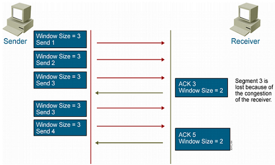

网络基础
PDU: Protocol Data Unit,协议数据单元是指对等层次之间传递的数据单位
CSMA/CD 载波多路访问/冲突检测
在 OSI 的第二层数据链路层
原理简单总结为：先听后发 边发边听 冲突停发 随机延迟后重发
集线器HUB
属于一层设备 所有端口在冲突域
以太网桥 交换机
属于二层设备 隔绝冲突域 通过mac地址进行通信
路由器
属于三层设备 分隔广播域 选择路径转发数据包
网络层次结构
TCP/IP模型与OSI模型
TCP/IP是一个Protocol Stack，包括TCP、IP、UDP、ICMP、RIP、TELNET、FTP、SMTP、ARP等许多协议
和ISO参考模型的分层有对应关系
应用层：为各种应用提供服务,见应用层的网络服务协议有：HTTP，HTTPS，FTP，POP3、SMTP等。
表示层：对数据进行解密和压缩,编码和转换功能
会话层：建立数据传输的通道 建立会话
传输层：
为上层协议提供端到端的可靠和透明的数据传输服务,利用传输协议和端口,对数据进行分段和传输,到达目的地址进行重组,包括处理差错控制和流量控制等问题。
该层向高层屏蔽了下层数据通信的细节，使高层用户看到的只是在两个传输实体间的一条主机到主机的、可由用户控制和设定的、可靠的数据通路。
我们通常说的，TCP UDP就是在这一层。 PDU叫做段 segment
网络层：对接收的数据进行IP的解封与封装 PDU叫做包 packet
数据链路层：对接收的数据进行MAC解封与封装 PDU叫做帧 frame
数据链路层又分为2个子层：逻辑链路控制子层（LLC）和媒体访问控制子层（MAC）。
MAC子层处理CSMA/CD算法、数据出错校验、成帧等
LLC子层定义了一些字段使上次协议能共享数据链路层。 在实际使用中，LLC子层并非必需的
物理层：编码为0 1的比特流 介质位数据的传输 PDU是bit
下层为上层提供服务
帧结构：8位前导符 6位目的MAC 6位源MAC 2位类型 （46~1500字节 Data） 4位FCS
通信特点：对等通信
工作原理

TCP
TCP特性：
工作在传输层
面向连接协议
全双工协议
半关闭
错误检查
将数据打包成段，排序
确认机制
数据恢复，重传
流量控制，滑动窗口
拥塞控制，慢启动和拥塞避免算法
tcp：传输控制协议 面向连接协议
0-65536 0-1023系统分配或特权端口 1024-49151用户或注册端口
49152-65535动态端口。客户端随机使用端口
定义：/proc/sys/net/ipv4/ip_local_port_range
TCP包头
1、端口号：用来标识同一台计算机的不同的应用进程。
1）源端口：源端口和IP地址的作用是标识报文的返回地址。
2）目的端口：端口指明接收方计算机上的应用程序接口。
TCP报头中的源端口号和目的端口号同IP数据报中的源IP与目的IP唯一确定一条TCP连接。
2、序号和确认号：是TCP可靠传输的关键部分。
表示本报文段所发送数据的第一个字节的编号。在TCP连接中所传送的字节流的每一个字节都会按顺序编号。
由于序列号由32位表示，所以每2^32个字节，就会出现序列号回绕，再次从0开始,建立连接时，SYN报文的ACK标志位为0
3、数据偏移：4bits,表示TCP报文段的首部长度
由于首部可能含有可选项内容，因此TCP报头的长度是不确定的，报头不包含任何任选字段则长度为20字节，
4位首部长度字段所能表示的最大值为1111，转化为10进制为15，15*32/8 =60
所以数据偏移也就是TCP首部最大60字节
首部长度也叫数据偏移，是因为首部长度实际上指示了数据区在报文段中的起始偏移值。
4、保留：为将来定义新的用途保留，现在一般置0。
5、控制位：URG ACK PSH RST SYN FIN，共6个，每一个标志位表示一个控制功能。
1）URG：紧急指针标志，URG=1时表示紧急指针有效，为0则忽略紧急指针。
2）ACK：确认序号标志，ACK=1时表示确认号有效，为0表示报文中不含确认信息，忽略确认号字段。
3）PSH：push标志，PSH=1表示是带有push标志的数据，指示接收方在接收到该报文段以后，应尽快将这个报文段交给应用程序，而不是在缓冲区排队。
4）RST：重置连接标志，用于重置由于主机崩溃或其他原因而出现错误的连接。或者用于拒绝非法的报文段和拒绝连接请求。
5）SYN：同步序号，用于建立连接过程，在连接请求中，SYN=1和ACK=0表示该数据段没有使用捎带的确认域，而连接应答捎带一个确认，即SYN=1和ACK=1。
6）FIN：finish标志，用于释放连接，FIN=1时表示发送方已经没有数据发送了，即关闭本方数据流。
6、窗口：滑动窗口大小
用来告知发送端接受端的缓存大小，以此控制发送端发送数据的速率，从而达到流量控制
窗口大小时一个16bit字段，因而窗口大小最大为65535。
7、校验和：奇偶校验
此校验和是对整个的TCP报文段，包括TCP头部和TCP数据，以16位字进行计算所得
由发送端计算和存储，并由接收端进行验证。
8、紧急指针：只有当 URG=1时紧急指针才有效。
紧急指针是一个正的偏移量，和顺序号字段中的值相加表示紧急数据最后一个字节的序号
TCP的紧急方式是发送端向另一端发送紧急数据的一种方式。
9、选项和填充：最常见的可选字段是最长报文大小，又称为MSS（Maximum Segment Size）
每个连接方通常都在通信的第一个报文段（为建立连接而设置SYN=1的那个段）中指明这个选项，它表示本端所能接受的最大报文段的长度。
选项长度不一定是32位的整数倍，所以要加填充位，即在这个字段中加入额外的零，以保证TCP头是32的整数倍。
10、数据部分： TCP报文段中的数据部分是可选的。
在一个连接建立和一个连接终止时，双方交换的报文段仅有TCP首部。如果一方没有数据要发送，也使用没有任何数据的首部来确认收到的数据。
在处理超时的许多情况中，也会发送不带任何数据的报文段。
11.紧急指针：标记紧急数据在数据字段中的位置
12.选项部分：其最大长度可根据TCP首部长度进行推算。TCP首部长度用4位表示，选项部分最长为：(2^4-1)*4-20=40字节 常见选项：
最大报文段长度：Maxium Segment Size，MSS，通常1460字节
窗口扩大：Window Scale
时间戳： Timestamps
MSS （Maximum Segment Size） 最大报文段长度
数据字段的长度加上TCP首部的长度才等于整个TCP报文段的长度。
MSS不宜设的太大也不宜设的太小。若选择太小，极端情况下，TCP报文段只含有1字节数据，在IP层传输的数据报的开销至少有40字节（包括TCP报文段的首部和IP数据报的首 部）。这样，网络的利用率就不会超过1/41。
若TCP报文段非常长，那么在IP层传输时就有可能要分解成多个短数据报片。在终点要把收到的各个短数据报片装配成原来的TCP报文段。当传输出错时还要进行重传，这些也都会使开销增大。
因此 MSS应尽可能大，只要在IP层传输时不需要再分片就行。
在连接建立过程中，双方都把自己能够支持的MSS写入这一字段。 MSS只出现在SYN报文中。即：MSS 出现在SYN=1的报文段中
MTU和MSS值的关系：MTU=MSS+IP Header+TCP Header 1500=1460+20+20
窗口扩大
为了扩大窗口，由于TCP首部的窗口大小字段长度是16位，所以其表示的最大数是 65535。
但是随着时延和带宽比较大的通信产生（如卫星通信），需要更大的窗口来满足性能和吞吐率，所以产生了这个窗口扩大选项
时间戳
可以用来计算RTT(往返时间)，发送方发送TCP报文时，把当前的时间值放入时间 戳字段，接收方收到后发送确认报文时，把这个时间戳字段的值复制到确认报文中， 当发送方收到确认报文后即可计算出RTT。
也可以用来防止回绕序号PAWS，也可以说可以用来区分相同序列号的不同报文。因为序列号用32为表示，每2^32个序列号就会产生回绕，那么使用时间戳字段就很容易区分相同序列号的不同报文
TCP三次握手

a) client发送SYN=1 初始序列号seq=x的数据包到server client进入SYN_SENT状态
b) server收到数据包后 同时发送一个ACK=1,SYN=1,随机seq=y,ack=x+1的确认链接请求数据包到client 由LISTEN状态进入SYN_RCVD状态
c) client收到确认包后 进入ESTABLISHED状态 并发送ACK=1 ack=y+1,seq=y+1的确认包到server server收到后进入ESTABLISHED状态
TCP四次握手：

a) client发送FIN=1释放链接请求包到server 进入FIN_WAIT1状态
b) server收到FIN请求包 发送ACK=1确认包给client 进入CLOSE_WAIT状态
c) server发送FIN=1数据包 关闭server与client数据传输 进入LAST_ACK状态
d) client收到FIN数据包 发送ACK=1数据包到server server进入CLOSED状态；client由FIN_WAIT2状态进入TIME_WAIT状态 并等待2MSL（TCP报文段在网络的生存时间）关闭
孤儿连接：如果不是为了在半关闭状态接受数据,client长时间停留在FIN_WAIT2状态并无益处
client执行半关闭后 未等服务器关闭连接就退出 此时client的连接由内核接受
防止长时间留在内核
/proc/sys/net/ipv4/tcp_max_orphans 指定内核接管孤儿连接数目
/proc/sys/net/ipv4/tcp_fin_timeout 指定孤儿连接在内核中生存的时间
TCP端口的十一种连接状态
TCP端口一共有十一种状态，CLOSE_WAIT表示是程序y关闭连接，而TIME_WAIT只占用一个socket连接，到时间之后会释放，因此大量的CLOSE_WAIT是比大量的TIME_WAIT影响更大，另外还有FIN_WAIT1和FIN_WAIT2，如果有FIN_WAIT2也表示服务有问题
以下是每个端口状态的含义：
1：CLOSED：端口默认是关闭状态。
2：LISTEN： 服务器程序开始监听一个端口，就是LISTEN状态。
3：SYN_RCVD：三次握手的第二次握手后的端口状态，是收到了客户端发送的SYN_SENT数据包之后的状态，这个状态很
短暂，正常在服务器上是很少看到的，除非服务器故意不发送最后一次握手数据包，服务器返回给客户端SYN确认之后就
会将在自己的端口置为SYN_RCVD。
4：SYN_SENT：SYN_SENT状态表示客户端已发送SYN=1的请求连接报文，发送之后客户端就会将自己的端口状态置为SYN_SENT。
5：ESTABLISHED：表示已经连接成功，客户端收到服务器的确认报文会回复服务器，然后就将端口置为ESTABLISHED，
服务器第三次收到客户端的Ack确认就会将端口置为ESTABLISHED并开始传输数据。
6：FIN_WAIT_1：出现在主动关闭方，FIN_WAIT_1状态实际上是当SOCKET在ESTABLISHED状态时，当任意一方想主动
关闭连接，向对方发送了FIN=1的断开连接请求报文，此时该SOCKET即 进入到FIN_WAIT_1状态。而当对方回应ACK报文
后，则进入到FIN_WAIT_2状态，当然在实际的正常情况下，无论对方何种情况下，都应该马
上回应ACK报文，所以FIN_WAIT_1状态一般是比较难见到的，而FIN_WAIT_2状态还有时常常可以用netstat看到。
7：FIN_WAIT_2：出现在主动关闭方，当被动方回应FIN_WAIT_1的ACK报文后，则进入到FIN_WAIT_2状态
8：TIME_WAIT：出现在主动关闭方，表示收到了对方的FIN请求关闭报文，并发送出了ACK报文，就等2MSL后即可回到
CLOSED可用状态了。如果FIN_WAIT_1状态下，收到了对方同时带FIN标志和ACK标志的报文时，可以直接进入到
TIME_WAIT状态，而无须经过FIN_WAIT_2状态。
9：CLOSING： 这种状态比较特殊，实际情况中应该是很少见，属于一种比较罕见的例外状态。正常情况下，当你发送
FIN报文后，按理来说是应该先收到（或同时收到）对方的 ACK报文，再收到对方的FIN报文。但是CLOSING状态表示你
发送FIN报文后，并没有收到对方的ACK报文，反而却也收到了对方的FIN报文。什 么情况下会出现此种情况呢？其实细
想一下，也不难得出结论：那就是如果双方几乎在同时close一个SOCKET的话，那么就出现了双方同时发送FIN报
文的情况，也即会出现CLOSING状态，表示双方都正在关闭SOCKET连接。
10：CLOSE_WAIT： 表示在等待关闭端口，这种状态存在于被动关闭的一方。
11：LAST_ACK： 是被动关闭方在主动关闭一方在发送FIN报文后，最后等待对方的ACK报文，当再次收到ACK报文后，也即可以进入到CLOSED可用状态了。
12：区分主动断开和被动端口方的端口状态：
主动端口方：SYN_SENT、FIN_WAIT1、FIN_WAIT2、CLOSING、TIME_WAIT 。
被动断开方：LISTEN、SYN_RCVD、CLOSE_WAIT、LAST_ACK 。
都具有的：CLOSED 、ESTABLISHED 。
拓展
1.为什么连接建立需要三次握手 而不是两次握手？
如果只有两次握手 服务端收到连接请求就进入ESTABLISHED状态 如果网络阻塞 客户端请求迟迟无法到达服务器 客户端超过应答时间后 上次请求将会失效 此时如果失效的连接到了服务器 服务器会等待下去 浪费连接资源
2.为什么连接的时候是三次握手 关闭的时候却是四次握手？
当server收到client的SYN包请求报文时 server可以同时发送ACK应答和SYN同步请求报文 但是关闭连接时 当sever收到client发送FIN结束报文时 不可能立即关闭连接 只能先回复ACK应答包 当server所有的报文发完后 才会发送FIN报文 同时client也会确认。
3.为什么TIME_WAIT状态需要经过2MSL(最大报文段生存时间)才能返回到CLOSE状态？
网络时不可靠的 为了保证发送的最后一个ACK报文段能够到达另一端
单个IP地址能接受的最大并发为六万多，1万个TIME_WAIT大约使用1MB的内存CPU占用更小，因此资源使用很小可以忽略不计
但是会占用一个socket，可以通过在负载上配置多个公网IP地址以提高高并发的问题，
cat /proc/sys/net/ipv4/tcp_tw_recycle
0 #用于快速回收处于TIME_WAIT状态的socket以便重新分，在负载服务器不能打开，会导致通过nat上网的后续用户
无法打开网页，因为后面的访问用户时间戳小于前面的用户，会导致数据包被负载服务器丢弃，可以在内网使用，但是通常建议关闭
cat /proc/sys/net/ipv4/tcp_tw_reuse
0 #kernel会复用处于TIME_WAIT状态的socket，即允许将TIME_WAIT状态得socket用于直接新的TCP连接，负载服务器建议打开
cat /proc/sys/net/ipv4/tcp_timestamps
1 #记录数据包的时间戳，判断是新的数据包还是旧的，如果是旧的就丢弃，配合上面两个选项的时候一定要打开才生效。
TCP超时重传
异常网络状况下（开始出现超时或丢包），TCP控制数据传输以保证其承诺的可靠服务
TCP服务必须能够重传超时时间内未收到确认的TCP报文段。
为此，TCP模块为每个TCP报文段都维护一个重传定时器，该定时器在TCP报文段第一次被发送时 启动。
如果超时时间内未收到接收方的应答，TCP模块将重传TCP报文段并重置定时器。
至于下次重传的超时时间如何选择，以及最多执行多少次重传，就是TCP的重传策略
与TCP超时重传相关的两个内核参数：
/proc/sys/net/ipv4/tcp_retries1 制定在底层ip接管之前最少重传次数 默认值是3
/proc/sys/net/ipv4/tcp_retries2 指定连接放弃前TCP最多重传次数 默认值是15
固定窗口
发送相同大小的数据包
TCP滑动窗口
通过动态改变窗口的大小来调节两台主机之间数据传输
可靠：对发送的数据进行确认
流控制：窗口大小随链路变化
随着接收者对收到数据的确认，滑动窗口随时向右移动。
窗口两端的相关运动增加或减少着窗口大小
TCP在传送数据时，第一次发数据发送方的窗口大小是由链路带宽决定的，但是接受方在接收到发送方的数据后，返回ack确认报文，同时也告诉了发送方自己的窗口大小，此时发送发第二次发送数据时，会改变自己的窗口大小和接受方一致。
当窗口过大时，会导致不必要的数据来拥塞我们的链路，但是窗口太小时，会造成很大的延时，比如为1时，发送方没发送一个数据，接受方就会返回一个ack报文，在发送方未接收到接受方的确认报文ack之前不会进行下一次发送。当链路变好了或者变差了这个窗口还会发生变话，并不是第一次协商好了以后就永远不变了。

拥塞控制
网络中的带宽、交换结点中的缓存和处理机等，都是网络的资源。
在某段时间，若对网络中某一资源的需求超过了该资源所能提供的可承受的能力，网络的性 能就会变坏。此情况称为拥塞
TCP为提高网络利用率，降低丢包率，并保证网络资源对每条数据流的公平性。 即所谓的拥塞控制
慢起动(slow start)、拥塞避免(congestion avoidance)、快速重传(fast retransmit)、快速恢复(fast recovery)
拥塞控制算法： /proc/sys/net/ipv4/tcp_congestion_control
Syn半连接和accept全连接队列
Linux内核协议栈为一个tcp连接管理使用两个队列，一个是半链接队列（用来保存处于SYN_SENT和SYN_RECV状态的请求），一个是accpetd队列（用来保存处于established状态，但是应用层没有调用accept取走的请求）。
半连接状态:
指TCP状态SYN_RCVD的状态。服务器处于Listen状态时收到客户端SYN报文时放入半连接队列中，即 SYN queue
全连接队列 accept queue(min(somaxconn, backlog)), 保存 ESTAB 的状态
/proc/sys/net/ipv4/tcp_max_syn_backlog 未完成连接队列大小,默认是128,建议调整1024以上
/proc/sys/net/core/somaxconn 完成队列大小,默认是128,建议调整大小1024以上
通过 ss -lnt 的 Send-Q 确认:
LISTEN 状态:
Recv-Q 表示的当前等待服务端调用accept完成三次握手的listen backlog数值，也就是说，当客户端通过connect()去连接正在listen()的服务端时，这些连接会一直处于这个queue里面直到被服务端accept()
Send-Q 表示的则是最大的 listen backlog 数值，这就就是上面提到的 min(backlog, somaxconn) 的值。
非 LISTEN 状态:
Recv-Q 表示 receive queue 中的 bytes 数量
Send-Q 表示 send queue 中的 bytes 数值
backlog参数这个和具体的应用程序有关，比如nginx默认为511
可以通过适当的增大 nginx 的 backlog 以及 somaxconn 来增大队列:
listen 80 backlog=1638;
Tomcat默认为100，也可通过server.xml中的<Connector acceptCount="300"/>来调整
UDP
工作在传输层
提供不可靠的网络访问
非面向连接协议
有限的错误检查
传输性能高
无数据恢复特性
UDP包头
IP
IP PDU 报头
版本:占4位,指 IP 协议的版本目前的IP协议版本号为4
首部长度:占4位,可表示的最大数值是15个单位，一个单位为4字节，因此IP的首部长度的最大值是60字节
区分服务:占8位,用来获得更好的服务,在旧标准中叫做服务类型,但实际上一直未被使用过.后改名为区分服务.只有在使用区分服务(DiffServ)时,这个字段才起作 用.一般的情况下不使用
总长度:占16位,指首部和数据之和的长度,单位为字节,因此数据报的最大长度为65535 字节.总长度必须不超过最大传送单元MTU
标识:占16位,它是一个计数器,通常，每发送一个报文，该值会加1，也用于数据包分片，在同一个包的若干分片中，该值是相同的
标志(flag):占3位,目前只有后两位有意义
DF： Don’t Fragment 中间的一位，只有当 DF=0 时才允许分片
MF： More Fragment 最后一位，MF=1表示后面还有分片,MF=0 表示最后
片偏移:占12位,指较长的分组在分片后，该分片在原分组中的相对位置.片偏移以8个字节为偏移单位
生存时间:占8位,记为TTL (Time To Live)数据报在网络中可通过的路由器数的最大值,TTL 字段是由发送端初始设置一个8bit字段.推荐的初始值由分配数字RFC指定,当前值为64.发送 ICMP 回显应答时经常把TTL设为最大值255
协议:占8位,指出此数据报携带的数据使用何种协议以便目的主机的IP层将数据部分上交给哪个处理过程, 1表示为ICMP协议, 2表示为IGMP协议, 6表示为 TCP 协议, 17表示为UDP协议
首部检验和:占16位,只检验数据报的首部不检验数据部分.这里不采用CRC检验码而采用简单的计算方法
源地址和目的地址:都各占4字节,分别记录源地址和目的地址
IP PDU 报头示例:

ICMP报文：包括IP头部（20字节）、ICMP头部（8字节）和ICMP报文
以太网帧格式
最大帧应该是1526字节，但是实际上我们抓包得到的最大帧是1514字节，为什么不是1526字节呢？
原因是当数据帧到达网卡时，在物理层上网卡要先去掉前导同步码和帧开始定界符，然后对帧进行CRC检验，如果帧校验和出错，就丢弃此帧。
如果校验和正确，就判断帧的目的硬件地址是否符合自己的接收条件（目的地址是自己的物理硬件地址、广播地址、可接收的多播硬件地址等）
如果符合，就将帧交给“设备驱动程序”做进一步处理。
这时我们抓包的软件才能抓到数据，因此，抓包软件抓到的是去掉前导同步码、帧开始分界符、FCS之外的数据，其最大值是6 + 6 + 2 + 1500 = 1514。
以太网规定，以太网帧数据域部分最小为46字节，也就是以太网帧最小是 6 + 6 + 2 + 46 + 4 = 64。
除去4个字节的FCS，抓包时就是60字节。
当数据字段的长度小于46字节时，MAC子层就会在数据字段的后面填充以满足数据帧长不小于64字节。
由于填充数据是由MAC子层负责，也就是设备驱动程序。不同的抓包程序和设备驱动程序所处的优先层次可能不同，抓包程序的优先级可能比设备驱动程序更高，
因此不同的抓包工具抓到的数据帧的大小可能不同。（比如，wireshark抓到的可能没有填充数据段，而sniffer抓到的就有填充数据段）
IP地址
32位
网络ID 主机ID
A类 1~126 0 0000000~01111111
网络数：126
每个网络中的主机数：2^24-2
默认子网掩码：255.0.0.0
B类 128~191 10 000000~10111111
网络数：2^14
每个网络中的主机数：2^16-2
默认子网掩码：255.255.0.0
C类 192~223 110 00000~11011111
网络数：2^21
每个网络中的主机数：2^8-2
默认子网掩码：255.255.255.0
D类 224~239 1110 0000~11101111 组播地址
172.16~172.31.255.255 私网地址
192.168 私网地址
169.254. 自动分配
127回环地址
10.0.0.0 私网地址
CIDR：无类域间路由 超网 子网掩码向左移
VLSM：变长子网掩码 子网掩码向右移
0.0.0.0不是一个真正意义上的IP地址。它表示所有不清楚的主机和目的网络
IPv6地址为128位长，但通常写作8组，每组为四个十六进制数的形式。
例如：
2001:0db8:85a3:08d3:1319:8a2e:0370:7344

MAC地址，
Media Access Control，介质访问控制,也叫硬件地址，长度是48比特（6字节），由16进制的数字组成
前24位前24位叫做组织唯一标志符
后24位厂家自己分配的